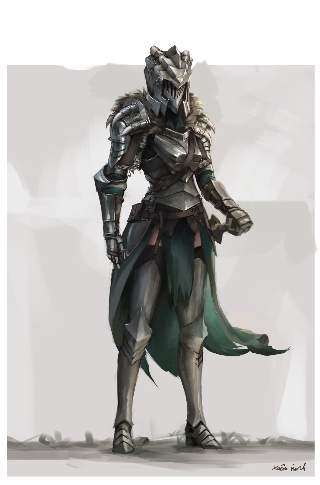

Todo empezó con un: "Hijo, vístete que hemos quedado con unos amigos y tus tíos". Aquella tarde,
mientras yo pasaba el tiempo con sencillos juegos de mesa acompañado de mi primo; mi padre, mis tíos
y sus amigos recorrían a caballo un desierto en busca de una antigua torre infestada de demonios.
Esta aventura, encargada por un reverendo sacerdote, pertenece al maravilloso, aunque peligroso,
mundo de Elric.
Tiempo después, ya enganchado a escuchar sus fascinantes historias, propuse comenzar un nuevo mundo
donde pudiéramos encarnarnos todos en la piel de algún valeroso guerrero o enigmático hechicero.
Para mi sorpresa, accedieron, y en menos de una semana teníamos preparada la siguiente partida.
Aquel día me presentaron "DungeonSlayers - Un juego de rol a la antigua", fácil de entender
y sencillo de jugar, ideal para un principiante como yo. Fueron 8 horas llenas de acción y
diversos desafíos mentales que hicieron de mi primera experiencia rolística una completa fantasía.
Al cabo de unos meses se despertó la curiosidad en mí: ¿Porqué no actúo yo como GameMaster?
Dicho y hecho. Me descargué la 3ª edición y comencé con un pequeño grupo de amigos, éramos solo
cuatro jugadores y yo no podía ser un personaje, así que las historias fueron un poco lentas
y extravagantes para mis compañeros, quienes no tenían ni idea de jugar.
Pasó el tiempo y las historias de DungeonSlayers se acabaron, ya no les interesaba jugar. Sin embargo,
a mi me encantaba el juego y conseguí un nuevo grupo de valerosos aventureros dispuestos a salvar
las extensas tierras de Caera. Esta vez comencé con la 4ª edición, más extensa, más completa,
y mientras pasábamos tardes enteras allanando templos malditos, destrozando goblins y derrotando
gigantescas criaturas, un amigo me dio una idea...
"¿Porqué no escribimos como si fuera un libro de fantasía nuestras aventuras?"
Y aquí estamos, creando un página web para redactar nuestras heroicas historias o, si me da mucha pereza,
hacer un podcast.
¡Por el momento no tenemos nada publicado, pero aquí te dejamos una cancioncilla de ambiente para cuando leas
nuestro primer relato!
Por cierto, necesito que cuideis mi botón un ratito hasta que vuelva. ¡No lo toquéis, porfavor!
¡Si estás interesado, visita su página web oficial:
DungeonSlayers - Ein altmodisches rollenspiel!
¡También existe una web no oficial en español:
DungeonSlayers ES (No Oficial)!